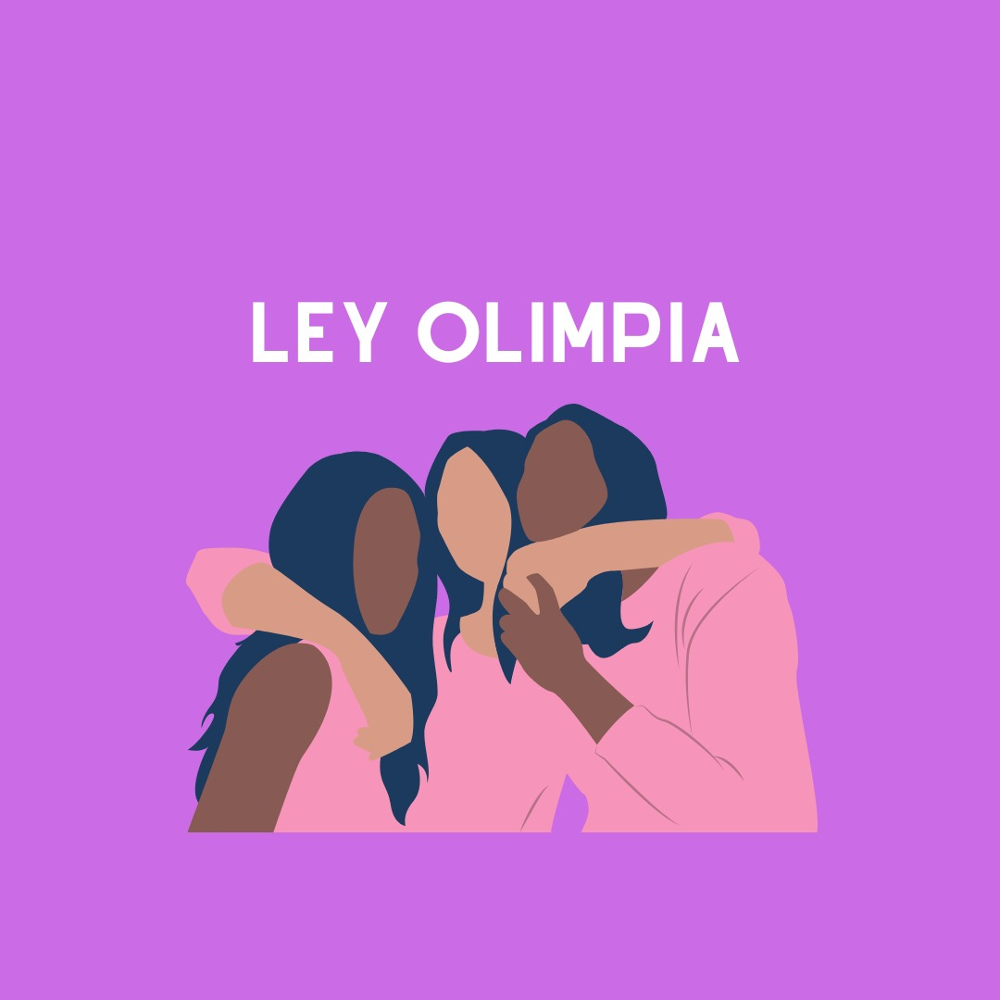
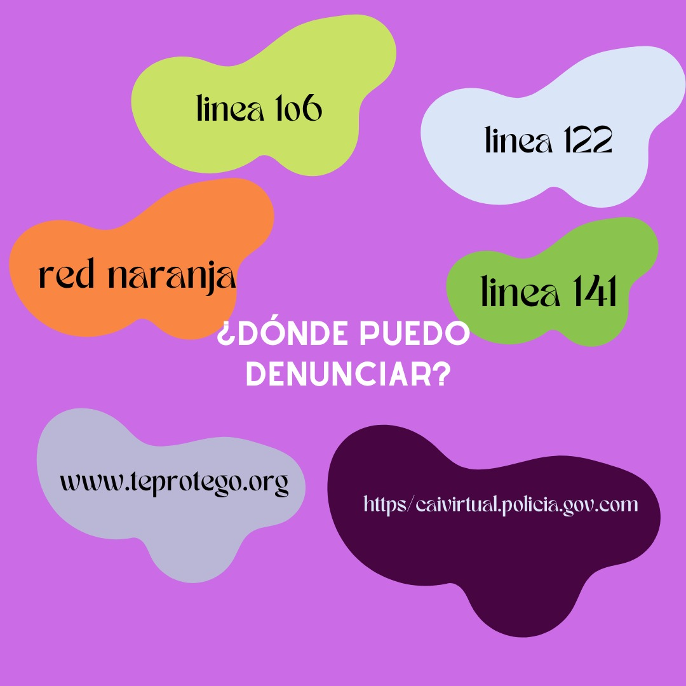

Si bien la era digital ha permitido la incorporación de nuevas herramientas y el desarrollo de múltiples propuestas
innovadoras, esto ha ido de la mano con la generación de nuevas problemáticas. Una de ellas es la violencia de género en el ámbito digital,
de acuerdo con el Consejo de Derechos Humanos de las Naciones Unidades (2018) se puede entender como: “todo acto de violencia por razón de
género contra la mujer cometido, con la asistencia, en parte o en su totalidad, del uso de las TIC, o agravado por éste, como los
teléfonos móviles y los teléfonos inteligentes, internet, plataformas de medios sociales o correo electrónico, dirigida contra una mujer porque
es mujer o que la afecta en forma desproporcionada”. Es importante matizar que dentro de la violencia de género digital se
pueden distinguir diversos tipos, desde la exclusión virtual y los insultos electrónicos hasta aquellos que implican la difusión
de contenido íntimo o la trata virtual de personas, generando nuevas dinámicas de violencia que trastocan principalmente a mujeres y niñas.
De acuerdo con la colectiva “Frente Nacional para la Sororidad” se pueden distinguir los siguientes tipos de violencia digital:.
La violencia digital trastoca la vida de miles de mujeres y niñas alrededor del mundo, pues “causa daños a la dignidad y la integridad, e impide el empoderamiento, desarrollo y el pleno disfrute de derechos humanos como la dignidad, la libertad de expresión y a la información, la protección de datos personales y el acceso a la justicia” (ONU Mujeres México, 2020). Lo cual actualmente es un problema público que requiere urgente atención, pues las cifras son alarmantes. De acuerdo con el informe de la Organización de los Estados Americanos (OEA) en un estudio presentado en 2015 por la Comisión de la Banda Ancha para el Desarrollo Sostenible de las Naciones Unidas, se señalaba que el 73% de las mujeres han sufrió algún tipo de violencia digital y en una proporción del 61% los violentadores eran hombres. Esto refiere un problema de género que pone de por medio la seguridad e integridad de mujeres y niñas, afectando significativamente su calidad de vida. Es por ello que se requiere el reconocimiento de la existencia de la violencia digital y sus diversos tipos, pues en ocasiones parece no ser evidente el impacto en la vida social y profesional, así como las repercusiones en la salud mental que pueden terminar por desencadenar otras problemáticas.
Dependiendo el país se cuentan con diferentes medios legales para combatirlo, a continuación anexamos algunos de ellos para su consulta:
Red Iberoamericana de Protección de Datos Organización de Estados Americanos OEA Ley Olimpia México Ante la violencia digital hacia la mujer y para contrarrestar estos vacios, colectivas y redes feministas estan creando en varios lugares del mundo líneas de atención locales y/o regionales para personas que enfrentan violencia de género en espacios digitales. Algunas lineas de apoyo son las siguientes: •Cai virtual , disponible en todas partes de latinoamerica •Línea 106 , disponible en bogota •Línea 141, disponible en Colombia •Te protego, disponible en todas partes de latinoamerica y para menores de 18 •Red naranja disponible en Mexico 
 Video informativo
Códigos Violeta
Video informativo
Códigos Violeta